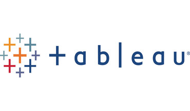

Data Analysis and Visualization Project Superstore Sales
This is a data analysis and visualization project focusing on sales data from a fictional superstore. The project utilizes Python for data preprocessing, analysis, and initial insights generation, followed by Power BI for advanced visualization and dashboard creation.
Health Monitoring and Analysis using Python
This project contains Python code for monitoring and analyzing
health data, including heart rate, blood pressure, and more.
Explore real-time physiological data collection and in-depth
analysis techniques
Health Analytics on patients with Obsessive-Compulsive Disorder
(OCD) using SQL
This Project contains SQL queries and analysis for a dataset on
patients with Obsessive-Compulsive Disorder (OCD). The dataset is
structured in a SQL table named patient_data, which includes
various demographic and diagnostic information about the patients.
Database Management SQL Script for Salary Analysis
This SQL script manages the "salaries" table in the "salarydb"
database. It performs various tasks including data retrieval,
calculation of averages, filtering based on conditions, and record
modification. It also showcases advanced operations like column
deletion, pay adjustment based on job title, and removal of
employees without overtime pay. Each query fulfills a distinct
role, facilitating data analysis and database upkeep.

Tableau Dashboards
Tableau Dashboards
Python weather data analysis with pandas
This Project contains a Python script for analyzing weather data
using Pandas. The script performs tasks such as data exploration,
cleaning, statistical analysis, filtering, and grouping. It
provides insights into various weather parameters and conditions.
Premier League 2020/2021 Season: A Comprehensive Analysis
Premier League 2020/2021 Football Analysis Project Explore
Python-based analysis techniques for the thrilling 2020/2021
Premier League season. Dive into data acquisition, cleansing,
manipulation, and visualization to uncover valuable football
insights.